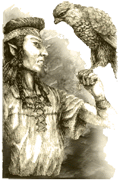
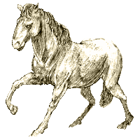

| |
Elf bestiebarát
Egy új jártasság
ismertetõje
|
Óvilág népei közül senki más nem
hangolódott rá olyan mélyen az élõvilág és
a vadon szavára, mint az elfek népe. Nem meglepõ
tehát, hogy isteneik is ezt a szemléletet tükrözik.
Fõbb isteneik közül az egyik Karnos, a bestiák
ura. Az emberi források õt Taal néven
ismerik, mint a vad helyek õsi istenét. Karnos
– akirõl bõvebb leírást is találhattok az oldalon
- a patrónusa a bestiabarátoknak.
Az emberek és a többi humán faj háziasított,
a vadonból befogott és megszelídített állatokat
használ. Az elfek ettõl eltérõen cselekszenek.
Az elfeknek egy állat lelkének megtörése “szelídítés” ürügyén barbár és
tipikusan emberi cselekedet: õk azt tartják jónak,
ha az állatok lelkét megnyerik maguknak, és kölcsönösen
együttmûködnek, nem pedig azt, ha szolgaságra
kényszerítik. A fentiekkel ellentétben az
emberek persze ellentmondásként értékelik az
elfek legendás |
 |
|
|
szeretetét a vadászat iránt. Õk
azonban ebben nem látnak semmi kivetnivalót,
hiszen a vadászat része az életnek a vadonban,
ahogyan a vadmacska vagy a farkas falka is vadászik.
Hasonlóan a többi vadászó állathoz a
vadonban, õk is csak akkor ölnek, ha az a túlélésükhöz
feltétlenül szükséges. A vadászat nem sport
az elfek számára!
|
Ebbõl a természettel való szoros
viszonyból született az elfek egyik legegyedibb
karrierje a Caraidh vagy Bestiabarát.
Minden elfben ott lapul legbelül a szeretet a
vadak iránt. Néhányan már ezzel születnek, a
többiekben pedig életük során bontakozik ki. A
bestiabarátok ezt a szokatlan vonzódást egy állatfaj
iránt, fejlesztik ki magukban rendkívüli
szintre. Mindig részei voltak az elf seregeknek,
maguk mellett hûséges állataikkal, hogy megvédelmezzék
az otthonaikul szolgáló erdõket.
Bestiabaráttá válni
Ez a karrier minden elf elõtt nyitva áll,
aki Karnost tiszteli, bármely más karrier után
felvehetõ, és váltáskor a normál 100
tapasztalati pontot kell kifizetni érte. Ahhoz,
hogy valaki bestiabaráttá váljon, sok idõt
kell erdõkben töltenie és lehetõleg olyan
csapatban, ami legalább egy másik bestiamestert
tartalmaz, aki egyengeti majd a karakter felkészülését.
A játék nyelvén ez nem különbözik
semmiben a többi karrier-váltástól, a GM-nek
csupán arra kell ügyelnie, hogy a váltáshoz
erdei környezet szükséges. Az elsõ lépés,
hogy egy karakter bestiabaráttá váljon, meghatározni
azt a fajt, ami iránt majd vonzalmat fog érezni.
Ezt a GM eldöntheti titkosan, természetesen szem
elõtt tartva a játékos személyiségét,
megbeszélheti a játékossal, és közösen dönthetnek,
vagy dobathat a játékossal a következõ táblázaton:
| D20
dobás |
Állatfaj |
Bestiabarát
megnevezése |
| 1-4 |
Medve |
Caraidh Bruinn |
| 5-8 |
Vaddisznó |
Caraidh Much |
| 9-10 |
Sólyom |
Caraidh Iolair |
| 11-12 |
Ló |
Caraidh Aech |
| 13-16 |
Kutya |
Caraidh Cu |
| 17-20 |
Vadmacska |
Caraidh Cadhmorr |
Ezek a legáltalánosabb állatfajták,
melyek egy elf követõjévé válhatnak. Vannak
ugyan szóbeszédek más fajokról is, de
ilyeneket viszonylag ritkán látni, mint ahogyan
persze magukat az elfeket is. Azt is beszélik,
hogy régen Ulthuan õs-öreg nemesei közt
akadtak olyan kivételes elfek, akik a sárkány-barátság
rendkívüli ajándékával jöttek a világra. Ez
egy olyan adomány volt, melyet nem sajátíthatott
el olyan, aki nem ezzel együtt született. Õk
voltak a Beith-Caradan Sárkánylovasok.
Egyesek úgy gondolják, hogy ez nem több mint
pusztán legenda. Mások úgy hiszik, hogy léteznek,
csupán hátasaikkal együtt sûrû erdõk mélyén
pihennek, várva az idõt, mikor majd újra szükség
lesz rájuk az elf faj védelmében.
Ha a karakter rendben felvette a karriert
és meghatározta a baráti állat faját, akkor
az újdonsült bestiabarátnak nem marad más
dolga, mint elmenni egy erdõbe, hogy az Állatok
elbájolása jártasság segítségével egy
vagy több követõre tegyen szert a kiválasztott
fajból.
Fejlõdési táblázat
|
Állat |
M |
Ws |
Bs |
S |
T |
W |
I |
A |
Dex |
Ld |
Int |
Cl |
Wp |
Fel |
| Medve |
|
+10 |
|
+2 |
+2 |
+2 |
|
|
|
|
|
+10 |
|
|
| Vaddisznó |
|
+10 |
|
+1 |
+1 |
+2 |
+10 |
|
|
|
|
+10 |
+10 |
|
| Sólyom |
+1 |
+10 |
+10 |
|
|
+1 |
+20 |
|
|
+10 |
+10 |
|
|
|
| Ló |
+1 |
|
|
+1 |
+2 |
+2 |
|
|
|
|
+10 |
+10 |
|
|
| Kutya |
+1 |
+10 |
|
|
|
+2 |
+10 |
|
|
+10 |
+10 |
+10 |
|
|
| Vadmacska |
+1 |
+10 |
|
+1 |
|
+1 |
+20 |
|
|
|
+10 |
|
+10 |
|
Képzettségek
Állatgondozás (Animal Care)
Állatok
idomítása (Animal Train)
Állatok hívása
(Call Animal)1
Állatok elbájolása
(Charm Animal)2
Nyomkövetés (Follow
Trail)2
Tájékozódás (Orientation)
Hatodik érzék (Sixth Sense)
1 Ez egy új képzettség,
csak bestiabarátoknak. A játékos bármikor magához
hívhat számos állatot a kiválasztott fajtából,
feltéve, ha éppen olyan erdõben tartózkodik,
ahol honos az az állatfaj (ez voltaképpen Óvilág
összes erdejét jelenti). A bestiabarát Ld-tesztet
hajt végre, és ha sikeres, akkor a kiválasztott
állatok 2D10 percen belül feltûnnek. Az
állatok száma a következõ táblázatban van
feltüntetve:
| Medve |
1 |
| Vaddisznó |
D3 |
| Sólyom |
1 |
| Ló |
1 |
| Kutya |
D3 |
| Vadmacska |
D3 |
A bestiabarát, aki egy elõzõ hívásból
származó állatokkal vagy együtt, nem kezdeményezhet
újabb hívást.
2 A karrierbe való belépést
követõen a bestiabarát automatikusan megkapja
ezeket a képzettségeket, de csak a baráti állatfajra
vonatkozólag. Ha rendeltetésszerûen szeretné
használni, akkor rendesen meg kell vennie
tapasztalati pontjaiból.
Ezen kívül még további képzettségeket
is kapnak a baráti állatfajtól függõen. Ezek
a következõk:
| Medve |
Speciális fegyver –
marokfegyverek (Specialist Weapon
– Fist Weapons), utcai harc (Street
Fighter), erõteljes ütés (Strike
Mighty Blow) |
| Vaddisznó |
Õrjöngõ támadás (Frenzied
Attack), utcai harc (Street Fighter),
ártó támadás (Strike to Injure) |
| Sólyom |
Hárítás (Dodge Blow),
menekülés (Flee!), ártó támadás
(Strike to Injure) |
| Ló |
Jó hallás (Acute Hearing),
menekülés (Flee!), lovaglás –
lovon (Ride – Horse) |
| Kutya |
Jó hallás (Acute Hearing),
Õrjöngõ támadás (Frenzied
Attack), utcai harc (Street Fighter) |
| Vadmacska |
Rejtõzködés - természetben (Concealment
– Rural), csendes mozgás – természetben
(Silent Move – Rural), speciális
fegyver – marokfegyverek (Specialist
Weapon – Fist Weapons) |
Felszerelés
A
bestiabarát karriernek nincsenek jellemzõ
felszerelési tárgyai. Bár sokan közülük
olyan fegyvereket és ruhákat hordanak, amelyek
emlékeztetnek a választott állatfajra.
Ilyenformán például a Caraidh Much-ok
(vagyis a vaddisznó-barátok) általában elõnyben
részesítik a hajlott, agyarhoz hasonló tõröket,
míg a Caraidh Bruinn és Caraidh
Cadhmorr, medve- és macskabarátok elõszeretettel
használnak karmokkal felvértezett ökölfegyvereket.
Karrierkijáratok
Tanonc – Karnos (Initiate - Karnos)
Harci táncoló (Wardancer) (ld. az Apocripha Now
kiegészítõ 68. oldalán)
Felderítõ (Scout)
Állatok a
harcban
Minden bestiabarát parancsba adhatja állat
kísérõinek, hogy harcoljanak az oldalán. Ehhez
szükség van egy Ld tesztre (a bestiabarátéra
nem az állatéra).
Medve
A medvék a következõ profillal
rendelkeznek:
|
|
M |
Ws |
Bs |
S |
T |
W |
I |
A |
Dex |
Ld |
Int |
Cl |
Wp |
Fel |
| Medve |
4 |
33 |
- |
4 |
4 |
11 |
30 |
2 |
- |
24 |
10 |
24 |
24 |
- |
A medvék két karmos mancsukkal
harcolnak. A sebesült medve õrjöngeni kezd (frenzy)
és félelmet (fear) okoz minden 10 lábnál
kisebb lényben.
Vaddisznó
Az erdei vaddisznók, amikkel általában
a Caraidh Much-okat látni, jellemzõen kisebbek,
mint a sima vaddisznók, amiket az alapkönyv részletez
(lásd. az alapkönyv 233. oldalán) a goblinok hátasaiként.
Ezeket ugyanis nem lehet meglovagolni. A következõ
értékekkel rendelkeznek:
| |
M |
Ws |
Bs |
S |
T |
W |
I |
A |
Dex |
Ld |
Int |
Cl |
Wp |
Fel |
| Vaddisznó |
6 |
33 |
- |
3 |
3 |
11 |
30 |
1 |
- |
10 |
14 |
14 |
14 |
- |
A vaddisznók rendelkeznek egy véres (gore)
támadással, ezzel azonban nem okozhatnak fertõzõ
sebeket (infected wounds). A sebesült vaddisznó
õrjöngeni kezd (frenzy).
Sólyom
A sólymok az alábbi profillal
rendelkeznek:
| |
M |
Ws |
Bs |
S |
T |
W |
I |
A |
Dex |
Ld |
Int |
Cl |
Wp |
Fel |
| Sólyom |
1 |
40 |
- |
1 |
1 |
3 |
50 |
1 |
- |
6 |
6 |
6 |
6 |
- |
Ha egy sikeres támadással további sebzést
okoz (lásd. az alapkönyv 122. oldalán), ne vedd
figyelembe a sebzés dobásokat. Ehelyett a támadás
egy pontnyi sebzést okoz a célpont fején, aki I-próbadobásra
jogosult, hogy elkerülje egyik szemének elvesztését
(+10 bonusz akkor, ha teljes arcot eltakaró
sisakot vagy bármilyen ellenzõt visel). A sólymok
zuhanórepülésben (swooper) támadnak, és
minden lövedék ellen normál védelemmel
rendelkeznek (lásd. az alapkönyv 129. oldalán).
|
Ló
A Caraidh Aech avagy a ló-barátok gyakran
lovagolnak, hátasaikon. Nagyon ritkán a
bestiabarát kötõdése egy egész ménesre
kiterjedhet. Ha a játékos a csata elején
sikeres Ld-tesztet hajt végre, akkor a
lova teljes értékû csataménként fog
viselkedni (ld. az alapkönyv 239. oldalán), és
az összes félelem elleni dobásánál a
bestiabarát Cl értékét használja a sajátja
helyett. A játékos plusz +20 pontot kap minden
kockázat (risk) dobására, ami a lovaglással
kapcsolatos; ez a bonusz már tartalmazza a normál
+10 módosítót is a lovaglás jártasságból. |
 |
Kutya
A Caraidh Cu-k által használt kutyák
speciális elf vadász kopók. Harci kutyaként
kell kezelni õket (lásd. az alapkönyv 235.
oldalán).
Vadmacskák
A Caraidh Cadhmorr általában Óvilág
nagyobb vadmacskáinak társaságában található
meg (lásd. az alapkönyv 234. oldalán). A
vadmacska mindig egy támadó-ugrással rohamozza meg célpontját
a harcokban.
fordította: Rincewind
A cikk az Apocrypha Now kiegészítõ
Elven Beastfriend címû fejezete alapján
készült
|
|